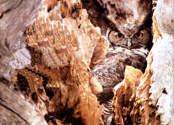
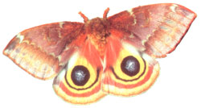
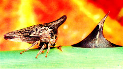

The Great Pretenders
April/May 2003
In nature, things are not always as they seem.
By Terry Kraustwurst
The firefly, a male Photinus pyralis, winks his best come-on wink as he flies through the summer night: Turning on his light for precisely half a second while swooping upward, he scribes a tiny illuminated "j" in the blackness. Light off, he cruises seven seconds, then-swoop, blink, another "j." Over and over, he trips his light fantastic in seven-second cadence. On the grass below, an appreciative female answers each "j" three seconds later with a half-second glow, a response that identifies her as a P. pyralis too, and a willing one at that. Encouraged, he draws near and lands next to his newfound mate. The female turns to him, grasps him in her forelegs-and, crushing his body between powerful jaws, devours her would-be lover's juicy innards.
Such are the dining habits of female Photuris fireflies, a whole different genus. Having cracked the code of the others' love talk, they lure in tasty Photinus males-and meals-by mimicking the come-hither flashes of Photinus females.
Sneaky? Yes, but hardly unique in nature. Mimicry-the practice of imitating something you're not to gain some kind of advantage-is widespread. Bugs do it, birds do it, reptiles and amphibians and even mammals do it. It's a predator-eats-prey world out there, and a little evolved trickery can mean survival.
HIDERS AND HOLLERERS
The simplest form of mimicry is Camouflage. The fundamental idea with camo, though, is not to imitate some other creature, but some other thing. The benefit in a locust treehopper resembling a locust thorn, a toad the pebbles on which it hops, a snake the leaves in which it slithers, is plain. A predator is less likely to bother you when you seem inanimate and inedible.
Not all pretenders in nature are duck-and-hide types, however. Others have evolved quite the opposite strategy and wear bold patterns and bright colors.
In some cases the patterns serve to create a momentary diversion. Scientists suspect that the lines around the edges of butterfly wings, for example, look like caterpillars to birds. Pecking for a meal of luscious larva, the bird winds up with a beak full of dry wing scales while the butterfly flutters away-tattered, perhaps, but alive.
The round "eye spots" on the wings of many moths and butterflies produce a Similar effect. Most insectivores go for the head -the nerve center-to subdue their prey. Aiming for the "eyes," a predator merely punches a hole in a wing and gives its quarry time to flee.
Eye spots can play another deceptive role. At rest, a large-winged moth or butterfly may seem a tempting target. But when a predator comes too near, the insect has a surprise in store. Opening its wings, it flashes its large eye spots- "Boo!" Startled by the sudden appearance of an animal's face, the predator leaves in a hurry.
Other creatures also sport distinctive designs and colors intended to frighten-but it's no act. Their colors are a fair warning, loud and clear: "Here I am, and I'm bad. Steer clear if you know what's good for you."
Many animals and insects that taste awful, sting or can otherwise turn a good day sour have adapted this warning-label strategy, known as aposematic coloration. It's effective, too-just check your own reaction next time you encounter a small, furry four-legger with white stripes clown its black back and tail. You're outta there.
WHO'S FOOLING WHOM?
Warning colors work by teaching predators hard lessons. When you take a bite of a yellow-and-black-striped buzzing thing and-Ouch!-get stung, you tend there-after to avoid putting yellow-and-black-striped buzzing things in your mouth.
This explains, at least partially, two phenomena: (1) why many of the bees and wasps you see rear similar yellow and black stripes, and (2) why there's a good chance at least some of the "bees" and "wasps" flying around couldn't hurt a fly-and may, in fact, be flies.
A variety of insects, including some beetles and moths, mimic hoes and wasps. The most common impostors are the syrphid flies: nectar-loving hover flies, drone flies and more. Most syrphids are fat, fuzzy and buzzy like bees; some are slim and hardbodied like wasps.
The supposition, of course, is that the unarmed and perfectly edible insects have, over the eons, developed the same striped uniform as the bees and wasps for defen sive purposes. Predators that have learned a painful lesson from the real stinging thing will avoid the impostors, too.
In scientific circles this idea-an edible species benefiting by imitating a noxious one-is known as Batesian mimicry. It's named after Henry Bates, a mid-1800s naturalist who roamed Brazilian forests collecting butterflies. Bates noticed that in many cases two similar-looking but different species shared distinct colors and patterns. He theorized that one species tasted had and kept predators away by advertising its patooey presence. The impostor species gained the same advantage even though it didn't taste bad.
You may have learned all about this in biology class. According to recent research, though, you may not have learned it exactly right. Mimicry, it turns out, can he as tricky as the pretenders themselves.
Take the oft-cited classic case of Batesian mimicry involving the dead-ringer resemblance between monarch and viceroy butterflies. For decades scientists thought that all adult monarchs carried within them the hitter aftertaste of their larval-stage milkweed diets, and thus were Unpalatable to birds and other predators. Viceroys were thought to be the edible mimics who benefited from the monarchs' distasteful reputation.
But when a graduate student at the University of Florida tested the notion by offering the bodies of both types to hungry blackbirds, he found-much to the scientific community's surprise-that both types taste had to birds. This kind of mimicry, in which both look-alike species are noxious, is known as Mullerian mimicry. There's no fraud involved, but both species benefit because predators nibbling at either learn to avoid the other, too.
Unfortunately, it turns out the monarchs and viceroys can't be netted into that neat category, either. Further studies suggest that some monarchs and some viceroys are palatable, while others are not. So who's mimicking whom, and why? Listen carefully, and you may hear the faint sound of puzzled biologists scratching their heads.
Likewise for the aforementioned syrphid flies, long considered obvious and classic mimics of wasps and bees. Naturally any bird that bites a bee is going to learn in a hurry to avoid all bee-like insects.
Well, yes and no. Scientists now know that many birds with eyesight sufficiently keen to discern striped patterns-phoebes, swallows and martins among them-gobble up bees and wasps with apparent relish. Not surprisingly, they're quick to make meals of syrphid fly look-alikes, too. So what would he the advantage of mimicking?
Further Studies have provided at least a partial answer. Some birds, it seems, are indeed susceptible to stings and learn the hard way to react with "yipes" to stripes. Crows and starlings are among birds that avoid both the real thing and syrphids. Perhaps more significantly, toads and frogs also keep a tight lip-and a coiled tongue-when it comes to the insects. So the syrphids' mimicry does indeed serve a purpose. Its not exactly surefire insurance against predation, as was once thought, but it does up the odds in the flies' favor.
Mimicry, it seems, teaches humans a dual lesson: In nature, you can never be sure of what you see ... or of what you think you know.
|
 MICHAEL FORSBERG |
 Skip Moody |
 BILL BEATTY |
 BILL BEATTY Many animals that eat spiders find ants distasteful. The ant-mimic spider, above, is more likely to survive because it resembles its two less-edible ant companions. |
|
|